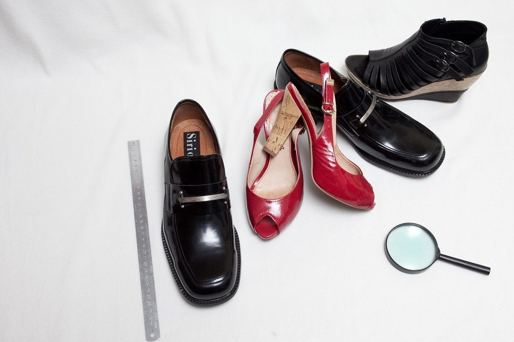

{kind=link}
Экспертное заключение, выдаваемое заказчику, имеет статус официального документа доказательного значения и может быть использовано в суде.
ВИДЫ ТОВАРНЫХ ЭКСПЕРТИЗ:
- Экспертиза мебели;
- Экспертиза меховых и кожаных изделий;
- Экспертиза одежды;
- Экспертиза обуви;
- Экспертиза бытовой техники;
- Экспертиза телефонов;
- Экспертиза компьютерной техники;
- Экспертиза фотоаппаратуры и др.
Обратитесь за независимой экспертизой:
- При разногласиях между поставщиком и получателем по результатам приемочного контроля, проведенного получателем в отсутствии поставщика и невозможности его явки на повторную приемку;
- При обнаружении или предполагаемом несоответствии фактического качества товара указанному в документах;
- При нарушении упаковки (поломка, деформация и др.);
- При наличии значительных качественных потерь в процессе транспортирования или хранения;
- Для выявления характера дефекта (производственный или приобретенный).
Специалисты нашей организации предоставляют квалифицированные услуги по экспертизе качества товаров в Тюмени.
Необходимость в обращении к нам может возникнуть как у физических, так и у юридических лиц, столкнувшихся с проблемой приобретения товаров ненадлежащего качества (с дефектами, нарушениями упаковки и т. д.).
Экспертиза качества товара в Тюмени − разные категории
- мебели;
- изделий из меха и кожи;
- обуви и одежды;
- бытовой и компьютерной техники;
- фотоаппаратов, мобильных устройств и т. д.
По результатам проведённой экспертизы качества товаров в Тюмени заказчику наших услуг выдаётся заключение, в котором зафиксированы результаты независимого исследования.
Почему экспертизу качества товаров в Тюмени стоит доверить именно нам?
Клиенты нашей организации, обратившиеся по поводу проведения экспертизы качества товаров в Тюмени, получают ряд преимуществ.
- высокое качество предоставления услуг – в распоряжении организации достаточно кадровых и технических мощностей, для того чтобы оперативно выполнить поставленные задачи различного уровня сложности;
- легитимность проведения экспертизы качества товаров в Тюмени – выданные нашими специалистами заключения имеют юридическую силу и могут быть использованы как документы доказательного значения в судах различных инстанций;
- доступные цены – стоимость наших услуг установлена на оптимальном уровне и полностью соответствует их качеству.
У вас возникли разногласия с поставщиками товаров? Не пытайтесь решить проблемы в одиночку. Обратившись в нашу организацию, вы сможете заказать экспертизу качества товаров в Тюмени и получить документальное подтверждение своей правоты для урегулирования конфликта и восстановления справедливости. Записаться на приём к специалисту можно, позвонив по номерам телефонов: 8 (3452) 51-30-87, 8 9044 730-690, 8 9044 730-770 или написав на электронный адрес организации sudexpert72@gmail.com.